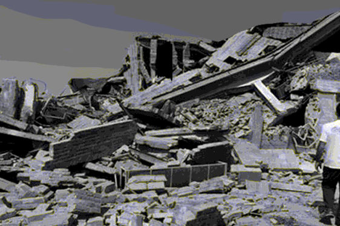

Earthquake
지진이란?
땅속의 거대한 암석이 갑자기 부서지면서 그 충격으로 땅과 건물이 흔들리고 지표면을 거북 등처럼 갈라놓는 지진은 지각 변동으로 지층(단층)의 움직임을 동반한다. 이때 산 붕괴, 해안 붕괴, 땅 미끌어짐, 산사태, 땅울림(지진 굉음), 발광 현상, 지하수 및 온천수의 이동이 일어난다. 또 지진이 발생할 때 마치 천둥이나 포격 또는 먼 거리에서 들려오는 차량들의 움직임 같은 소리가 들린다.

Animal Sense
이러한 지진을 미리 예측할 수 있을까?
동물에게는 인간이 모르는 예지능력이 있다고 한다. 지진이 일어나기 전에 땅 속에서 일제히 기어 나오는 토끼와 쥐처럼, 동물들의 이상행동에 관한 이야기는 한번쯤 들어봤을 것이다. 땅위의 동물 말고도 물속에 사는 어류도 지진을 감지할 수 있다고 한다.